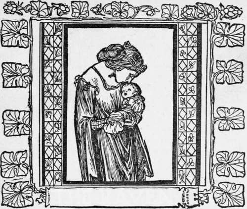

The Raven
Description
This section is from the book "Household Tales by Brothers Grimm", by Brothers Grimm. Also available from Amazon: Household Tales by Brothers Grimm.
The Raven
There was once a queen who had a little daughter, still too young to run alone. One day the child was very troublesome, and the mother could not quiet it, do what she would. She grew impatient, and seeing the ravens flying round the castle, she opened the window, and said : "I wish you were a raven and would fly away, then I should have a little peace." Scarcely were the words out of her mouth, when the child in her arms was turned into a raven, and flew away from her through the open window. The bird took its flight to a dark wood and remained there for a long time, and meanwhile the parents could hear nothing of their child.
Long after this, a man was making his way through the wood when he heard a raven calling, and he followed the sound of the voice. As he drew near, the raven said,
"I am by birth a King's daughter, but am now under the spell of some enchantment; you can, however, set me free." "What am I to do?" he asked. She replied, " Go further into the wood until you come to a house, wherein lives an old woman; she will offer you food and drink, but you must not take of either; if you do, you will fall into a deep sleep, and will not be able to help me. In the garden behind the house is a large tan-heap, and on that you must stand and watch for me. I shall drive there in my carriage at two o'clock in the afternoon for three successive days; the first day it will be drawn by four white, the second by four chestnut, and the last by four black horses; but if you fail to keep awake and I find you sleeping, I shall not be set free."
The man promised to do all that she wished, but the raven said, " Alas! I know even now that you will take something from the woman and be unable to save me." The man assured her again that he would on no account touch a thing to eat or drink.
When he came to the house and went inside, the old woman met him, and said, "Poor man! how tired you are! Come in and rest and let me give you something to eat and drink."
" No," answered the man, " I will neither eat nor drink."
But she would not leave him alone, and urged him, saying, "If you will not eat anything, at least you might take a draught of wine; one drink counts for nothing," and at last he allowed himself to be persuaded, and drank.
As it drew towards the appointed hour, he went outside into the garden and mounted the tan-heap to await the raven. Suddenly a feeling of fatigue came over him, and unable to resist it, he lay down for a little while, fully determined, however, to keep awake; but in another minute, his eyes closed of their own accord, and he fell into such a deep sleep, that all the noises in the world would not have awakened him. At two o'clock the raven came driving along, drawn by her four white horses; but even before she reached the spot, she said to herself, sighing, "I know he has fallen asleep." When she entered the garden, there she found him as she had feared, lying on the tan-heap, fast asleep. She got out of her carriage and went to him; she called him and shook him, but it was all in vain, he still continued sleeping.
The next day at noon, the old woman came to him again with food and drink, which he at first refused. At last, overcome by her persistent entreaties that he would take something, he lifted the glass and drank again.
Towards two o'clock he went into the garden and on to the tan-heap to watch for the raven. He had not been there long before he began to feel so tired that his limbs seemed hardly able to support him, and he could not stand upright any longer; so again he lay down and fell fast asleep. As the raven drove along with her four chestnut horses, she said sorrowfully to herself, " I know he has fallen asleep." She went as before to look for him, but he slept, and it was impossible to awaken him.
The following day the old woman said to him, " What is this ? You are not eating or drinking anything, do you want to kill yourself?"
He answered, "I may not and will not either eat or drink."
But she put down the dish of food and the glass of wine in front of him, and when he smelt the wine, he was unable to resist the temptation, and took a deep draught.
When the hour came round again he went as usual on to the tan-heap in the garden to await the King's daughter, but he felt even more overcome with weariness than on the two previous days, and throwing himself down, he slept like a log. At two o'clock the raven could be seen approaching, and this time her coachman and everything about her, as well as her horses, were black.
She was sadder than ever as she drove along, and said mournfully, "I know he has fallen asleep, and will not be able to set me free." She found him sleeping heavily, and all her efforts to awaken him were of no avail. Then she placed beside him a loaf, some meat, and a flask of wine, of such a kind, that however much he took of them, they would never grow less. After that she drew a gold ring, on which her name was engraved, off her finger, and put it upon one of his. Finally, she laid a letter near him, in which, after giving him particulars of the food and drink she had left for him, she finished with the following words: "I see that as long as you remain here you will never be able to set me free; if, however, you still wish to do so, come to the golden castle of Stromberg; this is well within your power to accomplish." She then returned to her carriage and drove to the golden castle of Stromberg.
When the man awoke and found that he had been sleeping, he was grieved at heart, and said, "She has no doubt been here and driven away again, and it is now too late for me to save her." Then his eyes fell on the things which were lying beside him; he read the letter, and knew from it all that had happened. He rose up without delay, eager to start on his way and to reach the castle of Stromberg, but he had no idea in which direction he ought to go. He travelled about a long time in search of it and came at last to a dark forest, through which he went on walking for fourteen days and still could not find a way out. Once more the night came on, and worn out, he lay down under a bush and fell asleep.
Continue to:
- prev: Briar Rose
- Table of Contents
- next: The Raven. Continued
Tags
fairy tales, children's stories, brothers grimm, household tales